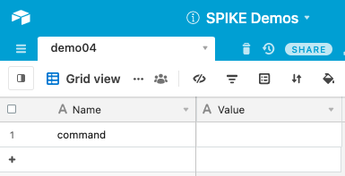
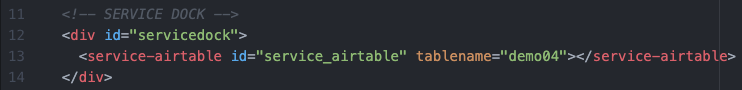
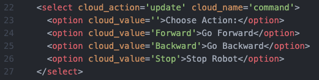
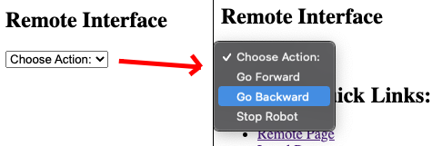
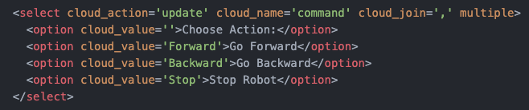
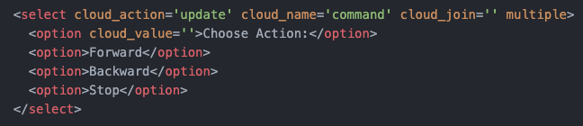
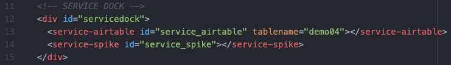
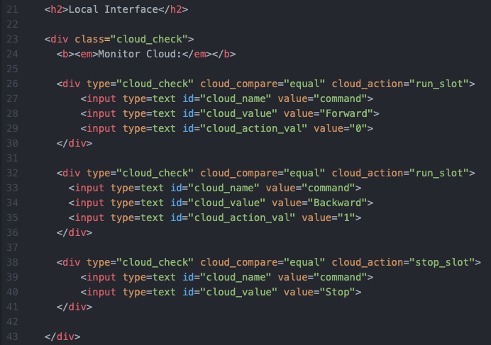
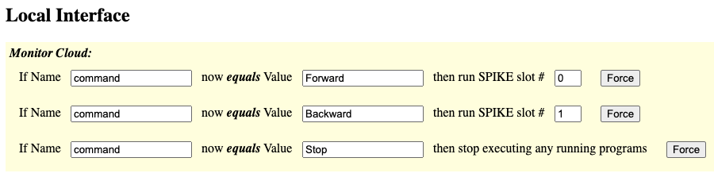

This demo shows how to use a select dropdown for user to supply content.
Be sure to view the overall Documentation for configuring the cloud storage (API key, Base ID, etc) and for more information on how the entire system works.
The "Name" column has an entry "command" that will hold the updated command from the Select Box.

Service Dock
The remote page has the Airtable Service Dock element. Make sure to update the tablename attribute to match your table name.
Remote Interface
This select box (
<select ...>) will update the "command" when a new item (<option ...>) in the select box is picked.This is how the text box will look on the Remote Page:
Notes:
- Multiselect boxes are supported; use the "cloud_join" to specify a value to join all the selected options before storing in the cloud.
- If the "cloud_value" attribute isn't used with the option tag, the innerHTML of the option tag will be used instead.
Example of multi-select:
Example of missing cloud_value attribute (and using an empty cloud_join value, which just concatinates all values together):

Service Dock
The local page has both the Airtable Service Dock element (make sure to update the tablename attribute to match your table name). There is also a single SPIKE Prime Service Dock element.
Local Interface
The local interface is set up identical to the Demo 01: Simple Button demo.
This is how this element will look on the Local Page:
